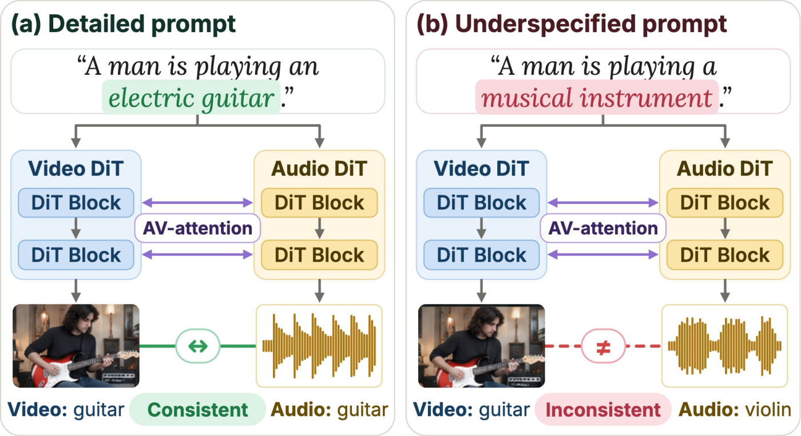
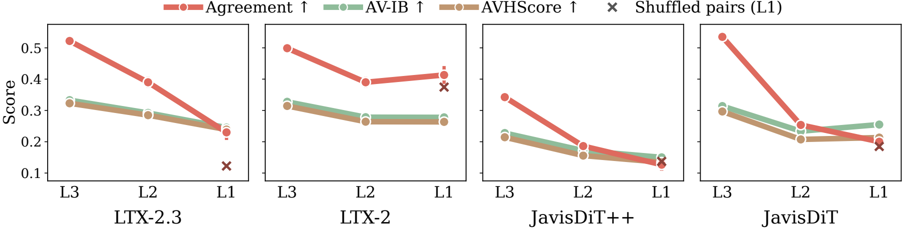
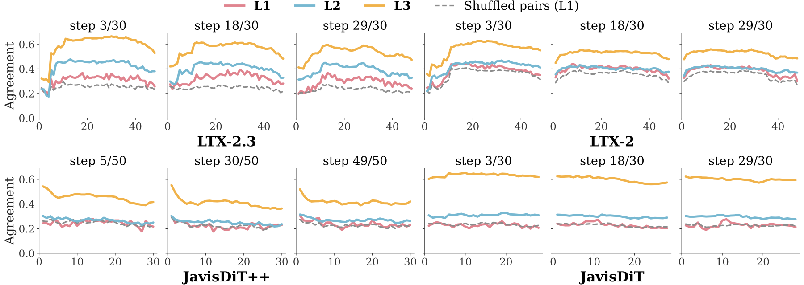
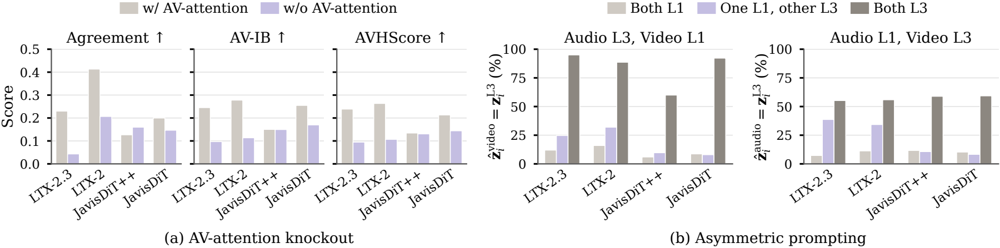
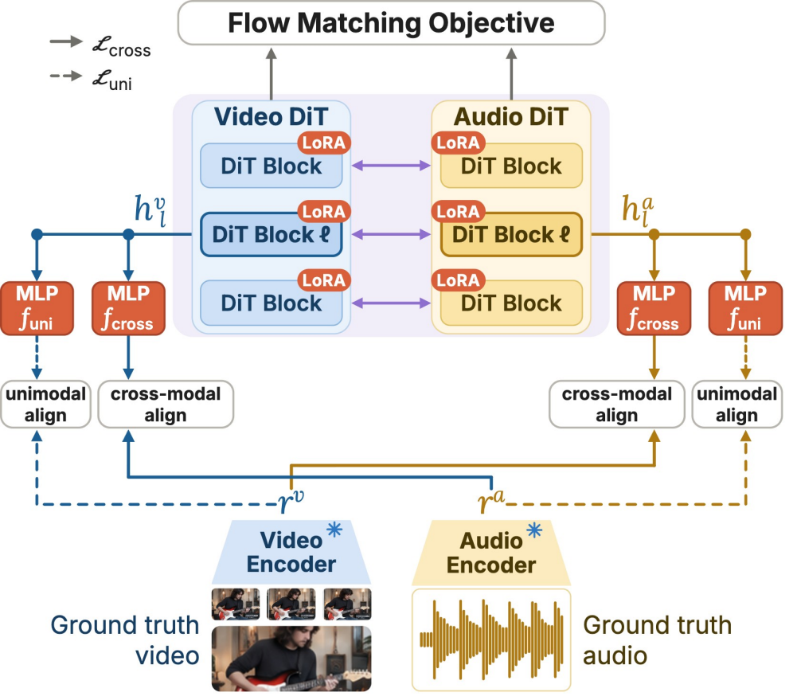

Our aim is to advance the understanding of genuine audio-visual coordination in joint text-to-audio-video (T2AV) generation, with particular emphasis on semantic consistency. Evaluating audio-visual consistency in T2AV generation is nontrivial, as detailed text prompts obscure whether such consistency stems from genuine cross-modal coordination or merely from independent text following. To isolate the former, we introduce intrinsic jointness: the ability of audio and video to produce the same realization for details left underspecified by the prompt. Using semantically underspecified prompts (e.g., “musical instrument playing” rather than “electric guitar playing”), we investigate four recent models and reveal their limited intrinsic jointness. To address this limitation, we propose JointREPA, a simple representation alignment-based post-training method to facilitate cross-modal coordination. Since existing benchmarks use semantically detailed prompts, we introduce UNSAIDBench, a benchmark designed to evaluate intrinsic jointness under semantic underspecification. Experiments across two distinct models and three benchmarks, including UNSAIDBench, demonstrate that JointREPA consistently improves semantic consistency.




Motivated by the findings in our analysis, we propose JointREPA, which extends REPA to T2AV generation. JointREPA aligns each modality's representation not only with target features from its own pretrained encoder, but also with those from the other modality. The former builds semantically rich representations that provide clearer signals for AV-attention to leverage, while the latter actively promotes cross-modal semantic exchange.

| AV-Consistency | AV-Synchrony | Text-Consistency | AV-Quality | ||||||||
|---|---|---|---|---|---|---|---|---|---|---|---|
| Model | Size | AV-IB ↑ | AVHScore ↑ | JavisScore ↑ | DeSync ↓ | TV-IB ↑ | TA-IB ↑ | CLIP ↑ | CLAP ↑ | VQ ↑ | AQ ↑ |
| UNSAIDBench | |||||||||||
| JavisDiT++ | 2.1B | 0.176 | 0.163 | 0.133 | 0.815 | 0.180 | 0.138 | 0.313 | 0.343 | 1.455 | 4.595 |
| + JointREPA | 2.1B | 0.207 | 0.196 | 0.164 | 0.804 | 0.174 | 0.163 | 0.310 | 0.369 | 1.655 | 4.628 |
| LTX-2.3 | 22B | 0.244 | 0.236 | 0.209 | 0.468 | 0.173 | 0.101 | 0.298 | 0.287 | 2.354 | 5.050 |
| + JointREPA | 22B | 0.302 | 0.288 | 0.261 | 0.440 | 0.169 | 0.124 | 0.298 | 0.327 | 2.256 | 4.852 |
| JavisBench-mini | |||||||||||
| JavisDiT++ | 2.1B | 0.200 | 0.182 | 0.157 | 0.784 | 0.283 | 0.170 | 0.316 | 0.429 | 1.538 | 4.987 |
| + JointREPA | 2.1B | 0.221 | 0.204 | 0.179 | 0.782 | 0.278 | 0.187 | 0.316 | 0.447 | 1.715 | 4.917 |
| LTX-2.3 | 22B | 0.249 | 0.238 | 0.214 | 0.555 | 0.280 | 0.171 | 0.306 | 0.412 | 2.458 | 5.348 |
| + JointREPA | 22B | 0.285 | 0.271 | 0.247 | 0.575 | 0.277 | 0.186 | 0.304 | 0.433 | 2.339 | 5.157 |
| VerseBench | |||||||||||
| JavisDiT++ | 2.1B | 0.213 | 0.201 | 0.172 | 0.905 | 0.182 | 0.189 | 0.325 | 0.479 | 1.580 | 4.280 |
| + JointREPA | 2.1B | 0.237 | 0.223 | 0.195 | 0.958 | 0.175 | 0.216 | 0.323 | 0.489 | 1.850 | 4.260 |
| LTX-2.3 | 22B | 0.332 | 0.317 | 0.287 | 0.284 | 0.167 | 0.191 | 0.317 | 0.447 | 2.760 | 5.004 |
| + JointREPA | 22B | 0.369 | 0.351 | 0.322 | 0.241 | 0.165 | 0.211 | 0.317 | 0.472 | 2.677 | 4.809 |
UNSAIDBench (UNderspecified Semantics in Audio-vIDeo generation) adapts the complex, real-world prompts of JavisBench to inject one underspecified shared factor per prompt. Following the AudioSet ontology, fine-grained event identities are abstracted into their parent categories (for example, “harp” becomes “musical instrument” and “cat” becomes “pet”) while the surrounding context is kept intact. Each stream can resolve the underspecified factor on its own; intrinsic jointness requires both to resolve it the same way. The underspecified shared factor is highlighted in each prompt.
Each slide shows, for the model named on top, a clip from the base model (left) and from the same model post-trained with JointREPA (right), generated from the same prompt and seed. Below each clip, Video and Audio name what the video shows and what the audio sounds like (green: the two streams agree, red: they do not). All clips have sound. Turn on audio; starting one clip pauses the others.
@article{jung2026beyond,
title={Beyond Co-Generation: Rethinking Jointness in Joint Audio-Video Generation},
author={Jung, Jihoo and Kim, Ji-Hoon and Lee, Suyeon and Pham, Gia Thinh and Chung, Joon Son},
journal={arXiv preprint arXiv:2611.22857},
year={2026}
}